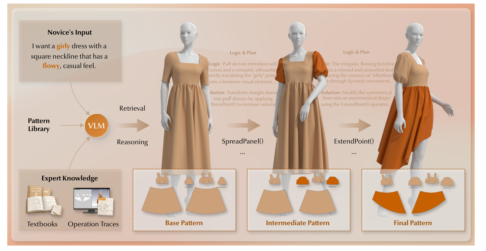
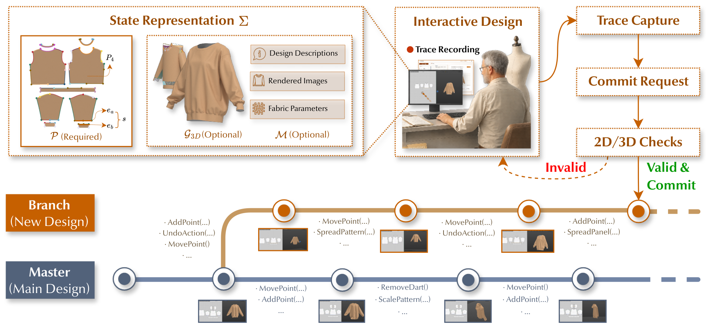
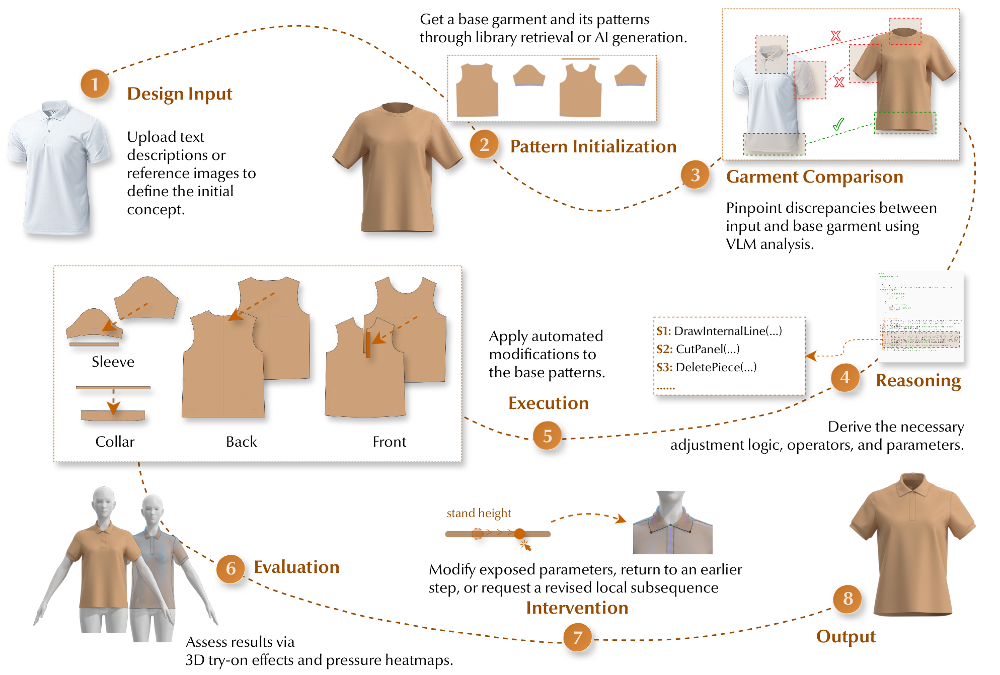
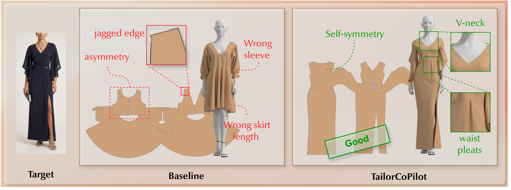
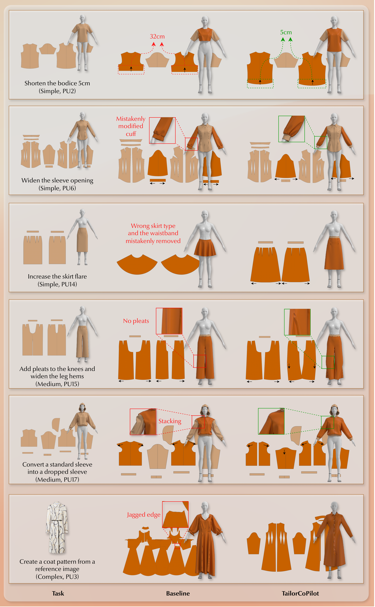

SpreadPanel(), ExtendPoint()) that progressively transform the base pattern into the final garment pattern, with synchronized updates in the 3D drape.
Experience-driven manufacturing, such as garment pattern making, faces a severe generational skills gap because its core expertise relies on undocumented tacit knowledge forged through day-to-day practice. To address this challenge, we present TailorCoPilot, an agentic pattern-making system built upon a specially designed version-control backend TailorTrace. TailorTrace models sewing patterns as structured, discrete states and records their transformations during the pattern-making process as explicit operation sequences defined upon the geometry primitives in the sewing pattern (panels, edges, vertices, and stitches). Integrated into a conventional pattern-making GUI, TailorTrace enables seamless documentation of senior experts' tacit pattern-making knowledge without breaking their daily workflow. The documented knowledge further offers interactive, pedagogical scaffolding for novices, while providing a robust foundation to power TailorCoPilot and train future generative AI models. In a user study with novices and advanced novices, TailorCoPilot improved task completion rates, reduced time and perceived workload, and yielded higher-quality artifacts compared to skill-appropriate baselines. Ultimately, TailorCoPilot demonstrates a viable pathway to capture practice-based expertise, operationalizing it to support both generative AI advancements and human apprenticeship.




@inproceedings{sun2026tailorcopilot,
title = {TailorCoPilot: Enabling Agentic Pattern Making with Version-Controlled State Tracking},
author = {Sun, Yuexin and Wang, Zhaohui and Liu, Ruiyang and Kong, Demian and He, Qian and He, Gaofeng and Wang, Huamin},
booktitle = {Proceedings of the 39th Annual ACM Symposium on User Interface Software and Technology},
series = {UIST '26},
year = {2026},
location = {Detroit, MI, USA},
publisher = {Association for Computing Machinery},
address = {New York, NY, USA},
doi = {10.1145/3830398.3830502},
isbn = {979-8-4007-2856-3/2026/11}
}